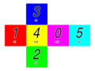

Panda3D Manual: Exploded cube map.png
{kind=link}
{kind=link}
{kind=link}

No higher resolution available.
Exploded_cube_map.png (400 × 300 pixels, file size: 29 KB, MIME type: image/png)
This image was generated by the following program:
from direct.directbase.DirectStart import *
from pandac.PandaModules import *
import math
faceColors = [
VBase4(1, 0, 1, 1), # 0 = magenta
VBase4(1, 0, 0, 1), # 1 = red
VBase4(0, 1, 0, 1), # 2 = green
VBase4(0, 0, 1, 1), # 3 = blue
VBase4(1, 1, 0, 1), # 4 = yellow
VBase4(0, 1, 1, 1), # 5 = cyan
]
# 3
# 1 4 0 5
# 2
facePlacement = [
Point3(1, 0, 0),
Point3(-1, 0, 0),
Point3(0, 0, -1),
Point3(0, 0, 1),
Point3(0, 0, 0),
Point3(2, 0, 0),
]
axisText = [
'+u',
'-u',
'+v',
'-v',
'+w',
'-w',
]
def makeTexture(digit, withColor, toRam):
"""Make a Texture that contains an image of the indicated digit.
If withColor is true, the digit is drawn in black with a white
border, on a field of color; otherwise, the digit drawn in white
on a field of black (for an alpha-only texture).
If toRam is true, the texture image will be copied to system RAM,
instead of just kept within framebuffer memory. This will be
necessary to reload the texture into a cube map later.
Returns the new Texture."""
# We need an offscreen buffer in which to render the image.
name = 'digit_%s' % (digit)
buffer = base.win.makeTextureBuffer(name, 256, 256, Texture(), toRam)
tex = buffer.getTexture()
# Create a camera to view the buffer.
dr = buffer.makeDisplayRegion()
cam = Camera('cam')
lens = OrthographicLens()
lens.setFilmSize(1, 1)
lens.setNearFar(-100, 100)
cam.setLens(lens)
root = NodePath(str(digit))
root.setDepthTest(0)
root.setDepthWrite(0)
dr.setCamera(root.attachNewNode(cam))
# Now set up the scene.
# Generate a label consisting of a digit and an axis name to put
# in the scene.
label = NodePath('label')
tnDigit = TextNode('digit')
tnDigit.setText('%s' % (digit))
tnDigit.setSlant(0.2)
tnDigit.setAlign(TextNode.ACenter)
tnDigitNP = label.attachNewNode(tnDigit.generate())
tnDigitNP.setPos(-0.05, 0, -0.10)
tnDigitNP.setScale(0.7)
tnAxis = TextNode('axis')
tnAxis.setText(axisText[digit])
tnAxis.setAlign(TextNode.ACenter)
tnAxisNP = label.attachNewNode(tnAxis.generate())
tnAxisNP.setPos(-0.05, 0, -0.35)
tnAxisNP.setScale(0.2)
if withColor:
# Put a colored background in the scene.
buffer.setClearColor(faceColors[digit])
# Generate a white border around the digit by generating a
# bunch of white digits, each offset by a tiny bit, to smear
# the digit outward.
offset = 0.01
for angle in range(0, 360, 30):
s = math.sin(angle * math.pi / 180.0)
c = math.cos(angle * math.pi / 180.0)
white = label.copyTo(root)
white.setPos(c * offset, 0, s * offset)
# Generate a black digit in the center of the frame, smack on top
# of the white smear.
black = label.copyTo(root)
black.setColor(0, 0, 0, 1)
else:
# It will be just a black background in the scene with a white
# digit in the foreground, so we don't need the border around
# the digit.
buffer.setClearColor(VBase4(0, 0, 0, 1))
white = label.copyTo(root)
# We don't need to keep this buffer around after it has generated
# its one image for the texture.
buffer.setOneShot(True)
return tex
def makeAllTextures(withColor, toRam):
"""Makes all of the six images of the cube map and returns the
list. """
# We want to have lots of resolution in the default font.
font = TextNode.getDefaultFont()
font.clear()
font.setPixelsPerUnit(120)
textures = []
for i in range(6):
tex = makeTexture(i, withColor, toRam)
textures.append(tex)
# Force a frame to render right now, to fill in all of the
# Textures at once.
base.graphicsEngine.renderFrame()
return textures
def makeCubeMap(withColor):
"""Makes a single cube map with all six images and returns it. """
textures = makeAllTextures(withColor, True)
cubeMapTexture = Texture('cubeMap')
cubeMapTexture.setupCubeMap()
for i in range(6):
# Extract the PNMImage from the texture so we can reload it
# into the cube map.
tex = textures[i]
image = PNMImage()
tex.store(image)
if not withColor:
# Reduce the image to a one-channel grayscale image, so we
# can make it just be the alpha channel.
image.setColorType(PNMImage.CTGrayscale)
cubeMapTexture.load(image, i)
if not withColor:
# If we're not using color, put the grayscale info in the
# alpha channel.
cubeMapTexture.setFormat(Texture.FAlpha)
return cubeMapTexture
def drawArrow(arrows, fromPoint, toPoint):
arrow = NodePath('arrowRoot')
arrow.reparentTo(arrows)
ls = LineSegs('line')
ls.setColor(0.4, 0.5, 1, 1)
ls.moveTo(*fromPoint)
ls.drawTo(*toPoint)
arrow.attachNewNode(ls.create())
ls = LineSegs('h2')
ls.setColor(0.4, 0.5, 1, 1)
ls.moveTo(-0.03, 0, -0.07)
ls.drawTo(0, 0, 0)
ls.drawTo(0.03, 0, -0.07)
h1 = arrow.attachNewNode('h1')
h2 = h1.attachNewNode(ls.create())
h2.setBillboardAxis()
h1.setPos(*toPoint)
h1.lookAt(*fromPoint)
h1.setP(h1, 90)
return arrow
def makeExplodedView():
"""Renders out an exploded view of the cube map distribution and
stores it as exploded_cube_map.png. """
textures = makeAllTextures(True, False)
root = aspect2d.attachNewNode('root')
root.setScale(0.6)
root.setPos(-0.3, 0, 0)
for i in range(6):
cm = CardMaker(str(i))
cm.setFrame(-0.5, 0.5, -0.5, 0.5)
np = root.attachNewNode(cm.generate())
np.setTexture(textures[i])
np.setPos(facePlacement[i])
# Now save the screenshot.
base.graphicsEngine.renderFrame()
base.win.saveScreenshot(Filename('exploded_cube_map.png'))
root.detachNode()
def makeMappedView():
"""Renders out a view of the cube map applied to a sphere and
stores it as mapped_cube_map.png."""
root = render.attachNewNode('root')
colorTexture = makeCubeMap(True)
boxRoot = root.attachNewNode('boxRoot')
boxRoot.setScale(4)
boxRoot.setPos(-2, -2, -2)
# Use box.egg as a plain box.
box = loader.loadModel('box.egg')
box.setTexGen(TextureStage.getDefault(), TexGenAttrib.MWorldPosition)
box.reparentTo(boxRoot)
box.setTexture(colorTexture, 1)
# Make the three arrows.
arrows = boxRoot.attachNewNode('arrows')
xarrow = drawArrow(arrows, (0, -0.1, -0.1), (1, -0.1, -0.1))
yarrow = drawArrow(arrows, (1.1, 0, -0.1), (1.1, 1, -0.1))
zarrow = drawArrow(arrows, (-0.1, -0.1, 0), (-0.1, -0.1, 1))
# Make the arrow labels.
labels = aspect2d.attachNewNode('labels')
labels.setScale(0.1)
tn = TextNode('label')
tn.setTextColor(0.4, 0.5, 1, 1)
tn.setSlant(0.2)
tn.setText('u')
tnpU = labels.attachNewNode(tn.generate())
tnpU.setPos(-3.5, 0, -8)
tn.setText('v')
tnpV = labels.attachNewNode(tn.generate())
tnpV.setPos(6.8, 0, -7)
tn.setText('w')
tnpW = labels.attachNewNode(tn.generate())
tnpW.setPos(-9.5, 0, 0)
# Pose the camera.
base.disableMouse()
base.camera.setPosHpr(6, -10.7, 5.6, 31, -27, 0)
# Take a picture of the solid box.
base.graphicsEngine.renderFrame()
base.win.saveScreenshot(Filename('mapped_cube_map_solid.png'))
# Now make the box see-through.
alphaTexture = makeCubeMap(False)
box.setTexture(alphaTexture, 1)
box.setTransparency(TransparencyAttrib.MDual)
box.setColor(0, 0, 0, 0.6)
box.setTwoSided(True)
# Draw a wireframe box too.
ls = LineSegs('box')
ls.setColor(0, 0, 0, 1)
ls.moveTo(-2, -2, -2)
ls.drawTo(2, -2, -2)
ls.drawTo(2, 2, -2)
ls.drawTo(-2, 2, -2)
ls.drawTo(-2, -2, -2)
ls.drawTo(-2, -2, 2)
ls.drawTo(2, -2, 2)
ls.drawTo(2, 2, 2)
ls.drawTo(-2, 2, 2)
ls.drawTo(-2, -2, 2)
ls.drawTo(0, 0, 0)
ls.drawTo(2, -2, -2)
ls.drawTo(2, -2, 2)
ls.drawTo(0, 0, 0)
ls.drawTo(2, 2, -2)
ls.drawTo(2, 2, 2)
ls.drawTo(0, 0, 0)
ls.drawTo(-2, 2, -2)
ls.drawTo(-2, 2, 2)
ls.drawTo(0, 0, 0)
ls.drawTo(-2, -2, -2)
wireBox = root.attachNewNode(ls.create())
# Put a solid sphere inside the box, for illustration.
sphere = loader.loadModel('smiley.egg')
sphere.setTexture(colorTexture, 1)
sphere.setTexGen(TextureStage.getDefault(), TexGenAttrib.MWorldPosition)
sphere.reparentTo(root)
# Now save the screenshot.
base.graphicsEngine.renderFrame()
base.win.saveScreenshot(Filename('mapped_cube_map.png'))
root.detachNode()
labels.detachNode()
base.enableMouse()
base.setBackgroundColor(1, 1, 1, 1)
makeMappedView()
makeExplodedView()
|
File history
Click on a date/time to view the file as it appeared at that time.
| Date/Time | Thumbnail | Dimensions | User | Comment | |
|---|---|---|---|---|---|
| current | 22:58, 8 October 2005 |  | 400 × 300 (29 KB) | Drwr (Talk | contribs) |
- Edit this file using an external application (See the setup instructions for more information)
{kind=link}
File usage
The following 3 pages link to this file:
{kind=link}
{kind=link}
| Back to the Manual |
© Carnegie Mellon University 2010